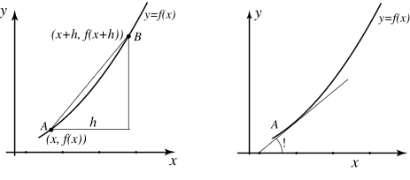

Long description: temp4

Alt text: The image displays two graphs illustrating the concept of the derivative by showing a secant line segment becoming a tangent line as the horizontal distance approaches zero.
This description was generated by AI and has not been verified by a human. If you spot an error, please use the feedback link below.
- The left graph shows a curve, labeled \(y = f(x)\), with two points marked: point \(A\) at coordinates \((x, f(x))\) and point \(B\) at coordinates \((x+h, f(x+h))\).
- A vertical distance \(h\) is indicated between the two \(x\)-coordinates on the horizontal axis.
- A line segment connects points \(A\) and \(B\), representing a secant line connecting the two points.
- The right graph shows the same curve, \(y = f(x)\), and is used to illustrate the limit process.
- A point labeled \(A\) is shown on the curve.
- A line segment is drawn that touches the curve at point \(A\) and approaches it from a nearby point, representing the tangent line to the curve at point \(A\).